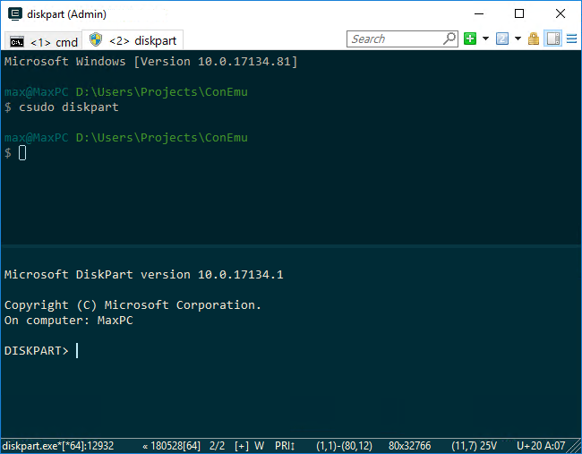

<!-- Content starts -->

<h1 id="h0"><a name="Unix_like_sudo_command_on_Windows"></a>Unix like sudo command on Windows<a href="#Unix_like_sudo_command_on_Windows" class="section_anchor"></a></h1>
<p>Common question: ‘Is there any &#x27;sudo&#x27; command for Windows?’ </p>
<p>One of the answers is here.  </p>
<p>ConEmu package contains (started from build 121028) batch file ‘%ConEmuBaseDir%\<a href="http://conemu-maximus5.googlecode.com/svn/trunk/ConEmu/Release/ConEmu/csudo.cmd" rel="nofollow">csudo.cmd</a>’. When checkbox ‘Add %ConEmuBaseDir% to %PATH%’ is On (‘ComSpec’ page), you may just type csudo in non-elevated prompt in your shell. </p>
<p><strong>Note</strong> You may also rename ‘csudo.cmd’ to ‘sudo.cmd’ if you like simple ‘sudo’ notation. And you must rename it if you like to change its contents to avoid loosing your changes when new update of ConEmu arrives. </p>
<p><strong>Note</strong> Elevated command will starts in new elevated ConEmu tab. </p>

<h2><a name="Example"></a>Example<a href="#Example" class="section_anchor"></a></h2>
<pre class="prettyprint">csudo dism /online /enable-feature /featurename:NetFX3 /All /Source:D:\sources\sxs /LimitAccess</pre>

<h2><a name="Screenshots"></a>Screenshots<a href="#Screenshots" class="section_anchor"></a></h2>
<p>Let type in command prompt ‘csudo diskpart’ </p>
<p> </p>
<p>Get UAC confirmation on Vista or later </p>
<p> </p>
<p>Or choose another credentials on Windows 2000 or Windows XP </p>
<p> </p>
<p>Here we are, diskpart started elevated in a split </p>
<p> </p>

<h2><a name="Batch_file_contents"></a>Batch file contents<a href="#Batch_file_contents" class="section_anchor"></a></h2>
<p>As you can see, batch contains two parameters, which you may redefine: ConEmuSplit and ConfirmClose. For example, if you want to start elevated command in new tab rather than in split - just change ‘<code>set ConEmuSplit=VERT</code>’ to ‘<code>set ConEmuSplit=NO</code>’. </p>
<p><strong>csudo.cmd</strong> </p>
<pre class="prettyprint">@echo off

rem This is analogue for *nix &quot;sudo&quot; command
rem You may rename this file to &quot;sudo.cmd&quot; or use it &quot;as is&quot;
rem Example:
rem csudo dism /online /enable-feature /featurename:NetFX3 /All /Source:D:\sources\sxs /LimitAccess

setlocal

rem Use split screen feature? Possible values: VERT, HORZ, NO
set ConEmuSplit=VERT

rem Show confirmation before closing SUDO tab
rem You may set NO here, if confirmation is not needed
set ConfirmClose=YES


rem When possible - use Ansi Esc sequences to print errors
rem Let set &quot;ESC&quot; variable to char with code \x1B
set ESC=

rem It is 64-bit OS?
if not %PROCESSOR_ARCHITECTURE%==AMD64 goto x32

rem First, try to use 64-bit ConEmuC
if exist &quot;%~dp0ConEmuC64.exe&quot; (
set ConEmuSrvPath=%~dp0ConEmuC64.exe
goto run
)

:x32
rem Let use 32-bit ConEmuC
if exist &quot;%~dp0ConEmuC.exe&quot; (
set ConEmuSrvPath=%~dp0ConEmuC.exe
goto run
)

:not_found
rem Oops, csudo located in wrong folder
if %ConEmuANSI%==ON (
echo %ESC%[1;31;40mFailed to find ConEmuC.exe or ConEmuC64.exe!%ESC%[0m
) else (
echo Failed to find ConEmuC.exe or ConEmuC64.exe
)
exit 100
goto :EOF

:run
rem Preparing switches
if %ConEmuSplit%==VERT (
set SPLIT=sV
) else if %ConEmuSplit%==HORZ (
set SPLIT=sH
) else (
set SPLIT=
)
if %ConfirmClose%==NO (
set ConEmuNewCon=-new_console:an%SPLIT%
) else (
set ConEmuNewCon=-new_console:ac%SPLIT%
)

if &quot;%~1&quot;==&quot;&quot; (
rem There was no arguments, just start new ComSpec
&quot;%ConEmuSrvPath%&quot; /c %ComSpec% %ConEmuNewCon%
) else (
rem Start requested command
&quot;%ConEmuSrvPath%&quot; /c %* %ConEmuNewCon%
)
rem all done</pre>

<!-- Content ends -->
